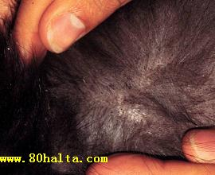
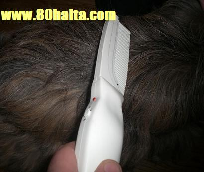

ئالدىنقى يازما
ئالدىنقى يازما كېيىنكى يازما
كېيىنكى يازما
باش پىتلاپ كېتىشنىڭ چارىسى نېمىدۇ؟
ئاپتور:Birzat ۋاقتى:2011-02-25


ئەسسالامۇ ئەلەيكۇم مۆھتىرەم بىرزات ئەپەندىم. تولىمۇ خىجالەتتە مېنى قىيناپ بىئارام قىلىۋاتقان بىر ئىش توغۇرلۇق ئۆزلىرىدىن مەسلەھەت سوراي دەپ كومپيۇتېر ئالدىدا ئولتۇرۇپتىمەن. بۇ گەپنى ئۆز ئانىسىدىن باشقا بىر كىمگە ئېيتماق ھەقىقەتەن تەس ئىكەن. ئەيىپكە بۇيرىماي ماڭا بىر يول كۆرسەتكەيلا. تازىلىققا شۇنداق دېققەت قىلىمەن بولمىسا، يەنە نېمە ئۈچۈندۇر بېشىم تولا قىچىشىپ بەك قىينىۋەتتى، ئىشلىتىۋاتقان چاچ سوپۇنلىرىم خىل كەلمىگەن ئوخشايدۇ دەپ قىممەت باھالىق سوپۇنلارنى ئىلىپ ئىشلىتىپ باقتىم، يەنىلا ئوخشاش، بىر قېتىم ماڭلىيىمدا ئىنتايىن كىچىك بىر ھاشارەت ماڭغاندەك بولىۋدى ئاستا ئىلىپ قاراپ باقتىم، ئۆمرۈمدە كۆرۈپمۇ باقمىغان بىر مەخلۇق ئىكەن. مىجىپ ئۆلتۈرۋېتەي دېسەم ھېچ ئۆلىدىغاندەك ئەمەس. شۇنىڭ بىلەن چوڭلارنىڭ پىت ھەققىدىكى گەپلىرى ئېسىمگە كىلىپ ئانامغا تېلفۇن قىلىپ ئەھۋالنى ئېيتسام دېگەندەك شۇ پىت ئىكەن. ئاناممۇ بۇنىڭ چارىسىنى بىلمەيدىكەن.ئاناممۇ پىت دېگەننى قىز بالا ۋاقىتلىرىدا كۆرۈپتىكەن. ھازىرمۇ پىتنىڭ بارلىقىدىن قاتتىق ھەيران قىلىۋاتىدۇ. باشقىلارنىڭ ئالدىدا بېشىمنى قاشلاپ قىلىشتىن شۇنچە ئەندىشە قىلىپ تۇرىمەن.مۇشۇ ئىش كاللامغا كىرىۋىلىپ دەرسلىرىممۇ تۈزۈك كاللامغا چۈشمىدى. ساۋاقداشلىرىمدىن بىرەرسىگە قاراپ قويغىن دېيىشتىن تېخى نۇمۇس قىلدىم، ئوغۇلبالا بولغان بولسامغۇ چېچىمنى چۈشۈرۈپلا قۇتۇلاتتىم. بۇ مەخلۇقنىڭ ماڭا قانداقلارچە يۇقۇپ قالغانلىقىنى ھېچ بىلەلمەي قالدىم. باشقىلارنىڭ پالاكەت باسقان، نەس باسقان ئادەمنى <<پىت بېسىپتۇ>> دېگەن گېپىنىڭ تەكتىگە ئەمدى يېتىۋاتىمەن. 80خالتا بلوگىنى شۇنچە ئاقتۇرۇپمۇ بۇ ھەقتە بىرەر ئۇچۇرغا ئىرىشەلمىدىم. ماڭا چاچ ھەم باشقا زېيان قىلمىغان ئاساستا مۇشۇ پىتنى يۇقۇتىدىغان بىرەر دورا ياكى ئەڭ ئاسان ئاددىي چارىسى بولسا كۆرسەتكەن بولسىلا، رەھمەت.
ۋەئەلەيكۇم ئەسسالام:
ھەقىقەتەن جاپادا قاپسىز، ھازىرقى ۋاقىتتا ئىزدىسىمۇ تاپقىلكى بولمايدىغان بۇ <<ئارزۇلۇق>> نىڭ سىزنىڭ بېشىڭىزنى ماكان تۇتۇپ سىزگە مالاللىق يەتكۈزگىنى ئوبدان بولماپتۇ.  پىتنىڭ پەيدا بولۇش سەۋەبلىرى ھەققىدە كۆپ نەرسىلەرنى بىلمەيمەن، لىكىن بۇنىڭ مەينەتچىلىك، كىر-قاسماق يۈرۈيدىغان كىشىلەردە بولۇپ قالىدىغانلىقىنى بىلىمەن. ئەپسۇسكى سىزدەك تازىلىققا تولۇق ئەھمىيەت بىرىپ پاكىز يۈرۈيدىغانلارغىمۇ باشقىلاردىن يۇقۇش ئارقىلىق <<ھۇجۇم>> قىلىشى مومكىن. بەلكىم ياتاقداشلىرىڭىزنىڭ بىرەرسىدىن يۇققان بولىشى، ياكى سىز ئولتۇرغان ئاپتۇبۇس، بولۇپمۇ ئۇزۇن يوللۇق ئاپتۇبۇسلارنىڭ كىرلىكلىرىنى ئوبدان تازىلىمىغانلىق سەۋەبىدىن باشقىلارنىڭ بەدىنىدىن چۈشۈپ قالغان پىتلار سىزنىڭ چېچىڭىزغا كىرىۋىلىپ كۆپەيگەن بولىشىمۇ مومكىن.
پىتنىڭ پەيدا بولۇش سەۋەبلىرى ھەققىدە كۆپ نەرسىلەرنى بىلمەيمەن، لىكىن بۇنىڭ مەينەتچىلىك، كىر-قاسماق يۈرۈيدىغان كىشىلەردە بولۇپ قالىدىغانلىقىنى بىلىمەن. ئەپسۇسكى سىزدەك تازىلىققا تولۇق ئەھمىيەت بىرىپ پاكىز يۈرۈيدىغانلارغىمۇ باشقىلاردىن يۇقۇش ئارقىلىق <<ھۇجۇم>> قىلىشى مومكىن. بەلكىم ياتاقداشلىرىڭىزنىڭ بىرەرسىدىن يۇققان بولىشى، ياكى سىز ئولتۇرغان ئاپتۇبۇس، بولۇپمۇ ئۇزۇن يوللۇق ئاپتۇبۇسلارنىڭ كىرلىكلىرىنى ئوبدان تازىلىمىغانلىق سەۋەبىدىن باشقىلارنىڭ بەدىنىدىن چۈشۈپ قالغان پىتلار سىزنىڭ چېچىڭىزغا كىرىۋىلىپ كۆپەيگەن بولىشىمۇ مومكىن.
ئەمدى ئەسلى گەپكە كەلسەك بۇنىڭ چارىسى مۇنداق: ئىچ كىيىم، يوتقان كىرلىكى دېگەنلەرنى ئىمكان بار يۇقۇرى قىززىقلىقتىكى سۇدا يۇيۇپ ئاپتاپقا قاقلاش، بەدەن تازلىقىنى ياخشى قىلىش، بولۇپمۇ قولتۇق دېگەندەك ئورۇنلارنى ياخشى ئېرىغداپ تۇرۇش كېرەك. چاچنى چۈشۈرمەي تۇرۇپ كىرىۋالغان پىتلارنى يوقۇتۇشتىكى ئەڭ بىخەتەر ئۇسۇل شۇكى:
پىت كۆپ بولۇپ كەتكەن بولسا ئاۋۋال سۈزگۈچ(پىتلاپ كەتكەن چاچ ياكى ھايۋانلارنىڭ تۈكىنى تازىلايدىغان چىشلىرى زېچ بولغان تارغاق) تە چاچنى سۈزۈپ بىر قېتىم ئېرىغداپ بولۇپ ئاندىن مۇۋاپىق مىقداردىكى ئىرىتىلگەن قوي يېغىغا بىر-ئىككى قوشۇق سىمابنى ئارىلاشتۇرۇپ چاچنىڭ يېلتىزى مايلىنىدۇ. سىمابنى ياغ بىلەن ئارىلاشتۇرۇشتا خىلى ئۇزۇن بىر نەرسىدە قوچۇش ياكى قول بىلەن مۇجۇش كېرەك. سىماب ياغدا ئىرىپ ئۇششاق مەرۋايىتتەك پارقىراپ ياغ بىلەن يېيىشىپ بولغاندا ئاندىن چاچ يىلتىزىنى ياغلىسا بولىدۇ.چاچ مايلىنىپ بىردەم جىممىدە ئولتۇرسىڭىز چاچ ئارىسىغا كىرىۋالغان پىتلار ئۆزلىكىدىن پىشانە، ماڭلاي، قۇلاق ئارقىسى دېگەندەك جايلاردىن سىرتقا ئۆمۈلەپ چىقىدۇ، شۇ ۋاقىتتا بىر-بىرلەپ تۇتۇپ يوقاتسىڭىز بولىدۇ. شۇ ۋاقىتنىڭ ئۆزىدە چىقالماي قالغانلىرى ۋە ئۇنىڭ سىكە (بالىلىرى) لىرى ئۆزلىكىدىن يوقىلىدۇ. بۇ ئۇسۇلنى چوڭلاردىن تولا ئاڭلىغان ئىدىم. ھەم بىر قېتىم مۇشۇ ئىشنىڭ شاھىدى بولۇپ كۆز ئالدىمدىن ئۆتكەن بولغاچقا بۇنى سىزگە ئىشەنچ بىلەن ئېيتتىم. ئازابلىرىڭىزدىن قۇتۇلۇپ ئارام تېپىپ قالغايسىز.
____ بىرزات

 يازما مەنبەسى: بېكەت ئەسىرى
يازما مەنبەسى: بېكەت ئەسىرى خەتكۈش: پىت
خەتكۈش: پىت  مۇناسىۋەتلىك يازمىلار:
مۇناسىۋەتلىك يازمىلار:
 قايتۇرما
قايتۇرما ]
]قىش كۇنلىرى سىرىتتاقۇيۇپ توڭلاتسا پىتلارنى يۇقاتقىلى بۇلىدۇ


ئىسسىقلىق دورلاردا يۇيۇنسام بولارمۇ؟
ئۇ بولسا ئادەم كېسەل بولمايدۇ دەيدىكەن راسمۇ
كىچىك بالىلارنىڭ ئېغىز پۇراش كېسىلىنى قانداق يۇقاتقىلى بولىدىغانلىقى توغرىسىدا بىر مەسلىھەت بەرگەن بولسىڭىز! رەخمەت سىزگە !!!
سەل ئىسسىقراق يەرگە كىرسەم ياكى قىززىق تاماق يىسەم پۈتۈن بەدىنىمدە بىر نەرسىلەر قىمىرلاپ بەك بىئارام قىلىۋېتىدۇ ... مەن بۇرۇندىن تىرىككەك بولغاچقا بۇنىڭغا زادىلا چىداپ بۇلالمىدىم ، پىت بۇلۇپ قالدىممىكىن دىسەم ئادەتتە ئىچ كىيىملىرىمنىمۇ ھەپتىدە ئىككى قېتىم ئالماشتۇرۇپ تۇرىمەن ،سىرىتلاردىمۇ قۇنۇپ قالمايمەن ... (ھازىرغىچە ئىچ كىيىملىرىمدە ئاختۇرۇپمۇ ئۇ سۈيۈملىك مەخلۇقدىن بىرەر تال ئۇچرىتالمىدىم ) مەن قانداق قىلارمەن ؟ يەنە نىمە سەۋەبتىن كىن چاچلىرىمنىڭ يېرىمى ئاقىرىپ كەتكىلى تۇردى ... مەن بۇ يىل 20 ياشتا . شۇڭا چاچ ئاقىرىشمۇ نۇرمال ئەھۋال ئەمەسمىكىن دەيمەن ، ھە راس يەنە مۇشۇ پۈتۈن بىر قىش پۇت قۇلۇم مۇزلۇقلا تۇرىدۇ ... باشقىلار بىلەن كۈرۈشكەندىمۇ ئۈزۈمنىڭ قۇلىنى بەك مۇزلۇقتەك ھىس قىلىمەن ....
سىز بىرزات ھەكىمنىڭ ئۇسۇلى بۇيىچە بىر ئىككى سوملۇق نەرسىلەرنى ساتىدىغان ھارۋۇلاردىمۇ سۈزگۈچنى(篦子) تېپىش ئانچە قىينغا توختىمايدۇ. شۇنى سېتىۋېلىپ ئۇخلاشتىن بۇرۇن ئەتىگىنى تۇرغاندا ئىشقىلىپ ۋاقىت چىقسىلا چېچىڭىزنى سۈزۈپ سۈزگۈچكە چىققان پىتلارنى يانجىپ ئۆلـتۈرۋېتىڭ.مۇشۇ ئەڭ ياخشى ئۇسۇل (ئاڭلىشىمچە بەزى يەرلەردە پىشىت ئالارمىش،يىغىپ قۇيۇپ سېتىپ بەرسىڭىزمۇ خەلە پۇللۇق بۇلۇپ قالسىز--- چاقچاق جۇمۇ)
مەن بۇيىل 21 ياشقا كىردىم. ئوغۇل . ئىككى ئۇچ ئاي بولدى يەل سەۋەبىدىنمۇ بەدىنىمگە بىر نەرسىلەر چىقپ
يېلىم تىشىپ كەتتى . خىلى ياخشى دورىلارنى يىدىم .ھەتتا تىلۋۇزۇردا ئىلان قلغان دورىلارنىمۇ يەپ باقتىم
ئۇيغۇر تىبابەت دوختىرىلىرىغىمۇ كۆرۈنۈپ ئۇلارنىڭ يىزىپ بەرگەن دورىلىرىنىمۇ يەپ باقتىم ،بىراق تازا ياخشى مەنپەئەت قىلمىدى .بەدەنلىرىم بەك قىچىشىدۇ ، تاماقتىنمۇ پەرىز تۇتتۇم بىراق پايدىسى بولمىدى ،شۇڭا بۇنىڭ نىمە كىسەللىك ئىكەنلىكىنى ، قانداق داۋالاش ئۇسۇلى بارلىقىنى بىر دەپ بەرساڭلا .
ماڭا بىر ياردەم قىلساڭلا دوسلىرىم .ئۆتۈنۈپ قالاي
كۆرۈپ ئۇرۇق تۇشۇش نەيچسى تۇسۇلۇپتۇ دىدىمۇ،ئىشىۋاپتۇ دىدىمۇ ئىشقىلىپ ئاپىراتسيە قىلىمز دەپ يەنە بىر دوختۇرنىڭ يىنىغا بۇيرىغان ئۇ دوختۇر كورۇپ ،ئىسسق ئۆتكۈزۈپ بەر دەپ ئەززانلا بىر دورنى يىزىپ بىرىپ
يەنە ئاغىرۋەرسە كەل ئوپىراتىسيە قىلىمىز دىگەن ،شۇنىڭ بىلەن دورىنى ئازلا ۋاقىت يىدىم بىراق 2ھەپتە ئىسسق ئۆتكۈزۈپ بەرسەم شۇ پىتى ئاغىرمىغان 3،4ئايدەك بولغان ئاغىرىمىغان ھازىر يەنە ئاغىرىۋاتىدۇ زادى قانداق قىلسام بۇلىدۇ مەسلھەت بەرسىڭىز.